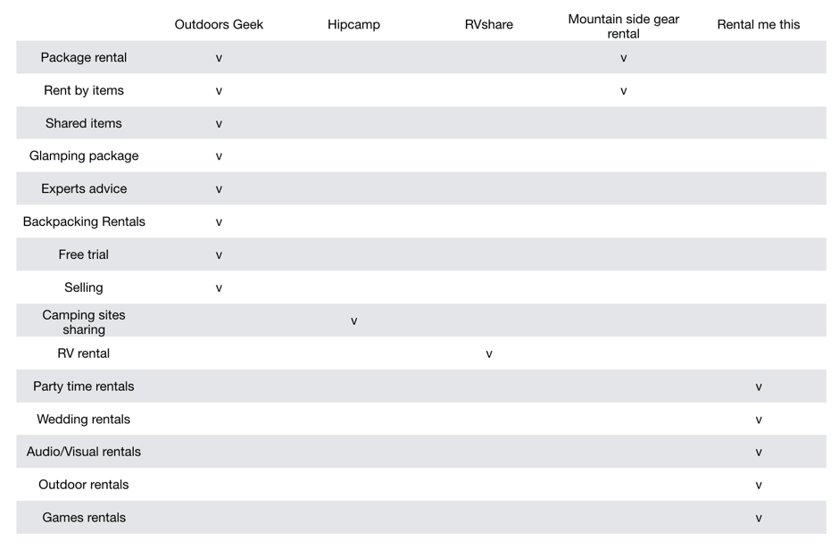
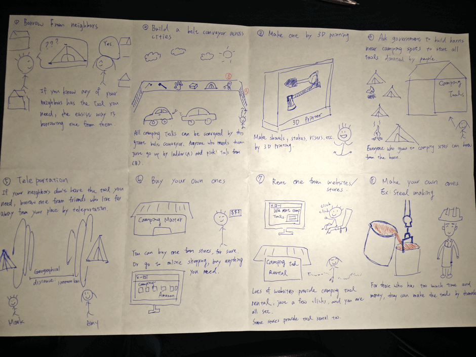
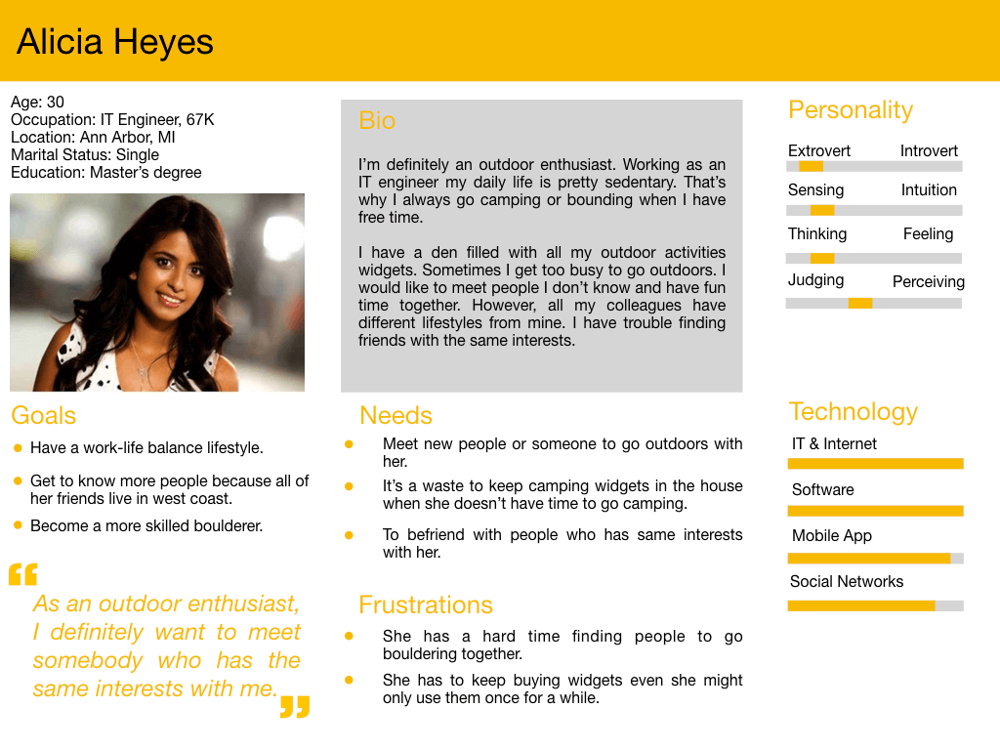
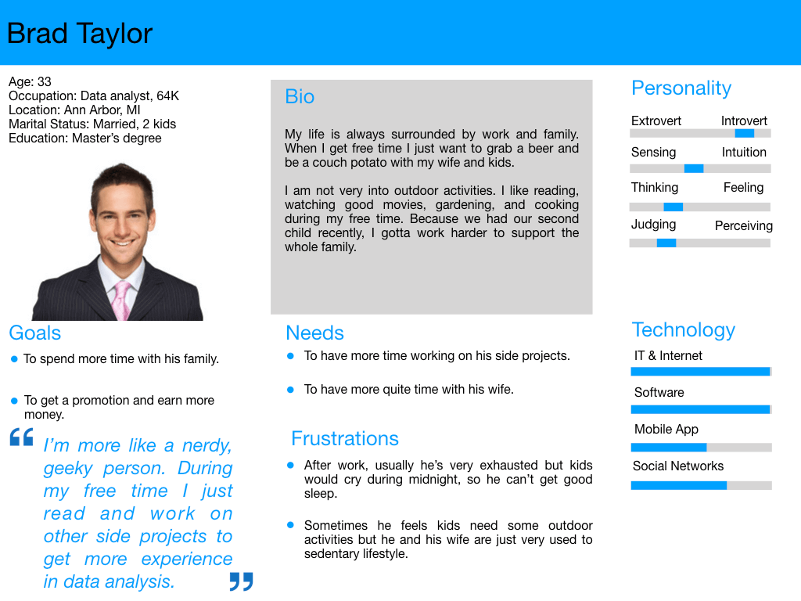
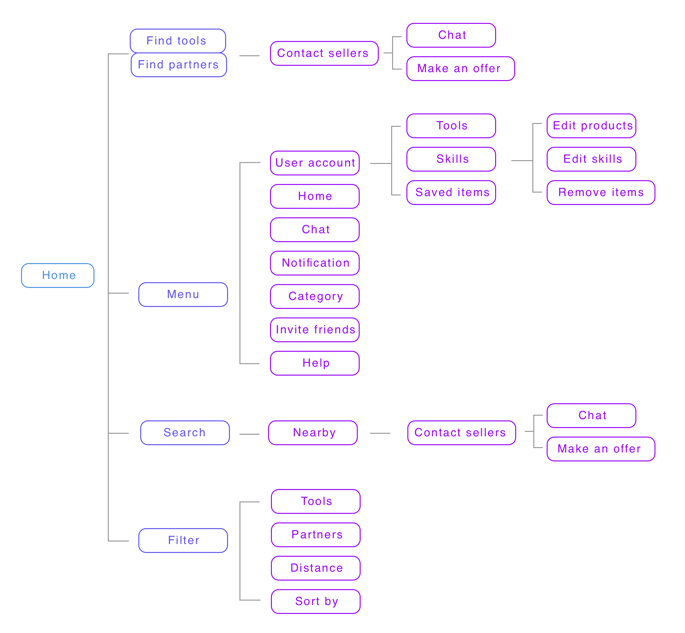

OutPerform

Project Introduction
To solve the gap of the demand and supply of used outdoor gears and personal trainers, I present “Outperform”, an app that users can search nearby equipment sharers and personal trainers based on their location. To encourage people being involved in more outdoor activities and take care of their well-being, this app helps bridge the two communities of the outdoor beginners and the outdoor experts.
My RoleUX DesignerVisual Designer
ToolsPencil & PaperSurveyCakeSketchInVision
Team SizePersonal Project
TimeframeSept. 2017 – Dec. 2017
SkillsAnalytical researchSketching techniquesScenarios and storyboardingWireframing and prototyping
The Problem
Participating in outdoor activities becomes more and more popular for city dwellers, and people keep buying outdoor gears but probably not using them as often as they thought. According to a recent study from the Outdoor Industry Association, each year Americans spend $120 billion on products for outdoor recreation (Appalachian Mountain Club, 2012). There is a clear demand for gently used outdoor gears since we can find relevant websites selling used gears for different kinds of activities. Meanwhile, outdoor activity beginners would spend a lot of money if they are hiring personal trainers, and those who don’t may get injured without proper instructions or helps from experienced trainers.
The Process
Interview
The design process was started by several interviews with those who wish to participate more in outdoor activities and who identified themselves as frequent outdoor activities participants. Some important findings are:
- Novices were afraid of big financial commitment such as hiring a coach or a personal trainer. For novices, buying new equipment is risky because they are still exploring and not sure for how long they would be interested in the same activity.
- Experts mentioned that some equipment ended up in the storage unit because the increase of their skill level.
“The thing is if I sign up for some training classes, I have to attend regularly, but my schedule is usually not regular, and hiring a personal trainer is relatively expensive.”“You can see a lot of gently used equipment in my storage unit, and usually I have to go to all kinds of garage sell websites to get rid of them.”
In the beginning, my design was only for people to search nearby users to do outdoor activities together. However, after the interviews, I realized that differentiating experts and novices is difficult and experts may lack motivations to “share their knowledge” with novices. The book Modeling Users: Personas and Goals (Cooper, 2014) actually helped me a lot to re-frame my problem and let me think about what experts may need and what could motivate them. What can they offer? How can they benefit from my design? When I thought about these questions and tried to answer them, I figured that experts have a lot of equipment or gears that can share with other people. When we give them the incentive to share gears, they may be motivated and start to share their knowledge as well.
Competitive Analysis
Brainstorming
“To be creative, lose the fear of being wrong.”
8 solutions when you don’t have outdoor activity equipment.
Scenario & Persona
Basing on the ideas from brainstorming, I picked 6 solutions that are viable with current technologies. Then I developed each scenario by sketching out the storyboards.
Besides storyboarding, I made 3 personas and 1 anti-persona based on the interview data interpretation.
 The Functionality
Search a variety of outdoor equipment nearby your location.
- Search nearby activities partners.
- Register as certificated trainers.
- Chat and pair up with activity partners.
- Upload and sell your equipment.
- Filter partners or equipment by geological distance, type of activities, and prices.
Interaction Map
Paper prototype
After testing some of my ideas with the low-fidelity prototype, I realized that some details have to be considered before I make my high-fidelity prototype. From the reading Questions, options, and criteria: Elements of design space analysis I had the opportunity to reconsider the meanings of my design decisions. Do I need my users to log in? What is the purpose to ask my users to log in and what does this interaction represent? How do I maintain the “review” mechanism fair and trustworthy? Thinking through these questions helped me decide both details and high-level design goals.
My final design decision is that we should empower our users rather than restrict their behaviors. Users have to verify their skills by certifications on the current applications or websites in the market, but I decided to let users self-report their skill level and their equipment condition. However, to ensure the app provide trustable information, the skill level or the product condition that is shown on the user profile would average reviews from other users and the self-report level.
High-Fi Prototype
Reflection
My design philosophy is “design for equity”. In our society, we have a lot of people with low-income who may not have the money to maintain their well-being, not to mention doing outdoor activities that require knowledge and expensive equipment. The possible social impacts of the design are that the equipment renting business may lose customers if people start to share their own equipment; but on the bright side, the design also encourages people to connect both online and offline, and cultivate the habit of participating in outdoor activities.